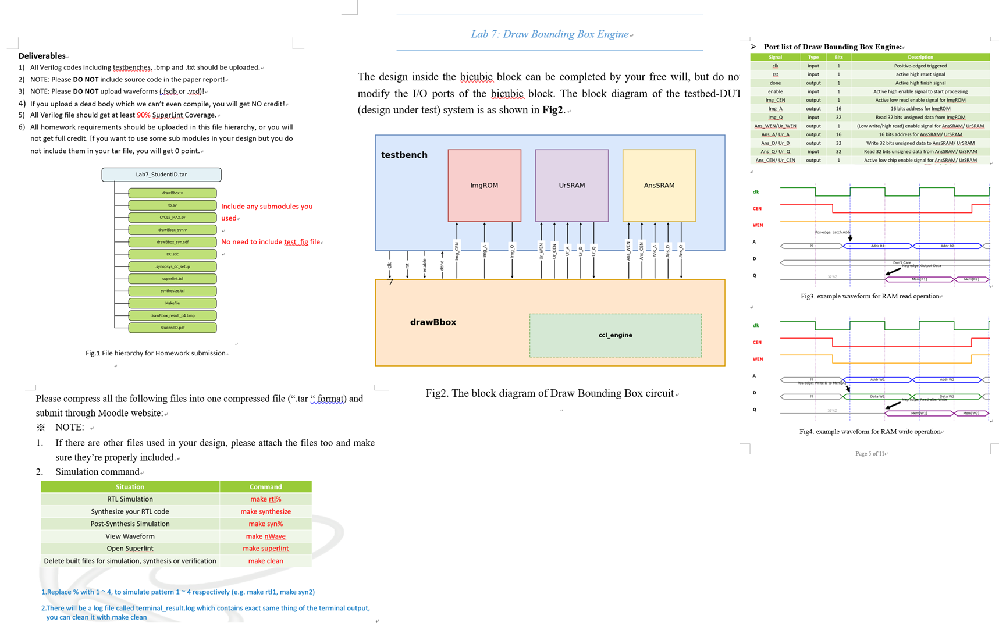

Lab 7：Draw Bounding Box Engine 開發與繳交項目完成表單（公式修正版）
本頁整理「須完成開發項目清單」與「須完成繳交項目清單」，每一項均標註完成狀態、相關文件、缺少內容與補救方式。內容採中文報告版，可直接放入 Lab7 HTML/Word/PDF 報告。
單檔 RTL：drawBbox.vP1～P4 RTL PASSTotal errors = 0外部圖片載入一、題目要求與表單製作目的
Lab7 要求完成一個 Draw Bounding Box 影像處理硬體。輸入影像為 256×256 RGB photo，系統需依序完成讀圖、灰階轉換、3×3 Gaussian filter、Otsu threshold、binary mask、auto-polarity correction、8-connected CCL、Bounding Box 座標計算、邊界物件過濾與 overlay 輸出。最後輸出影像需與 golden result 逐 pixel 完全一致。

二、修正版核心數學式
2.1 RGB 轉灰階
Lab7 指定灰階為 BT.601 近似加權，且結果必須使用 round to nearest, ties to even，不能只用一般 +128 四捨五入。
硬體整數近似可使用 8-bit scale：
2.2 Gaussian Filter
3×3 Gaussian filter 應寫成完整卷積式，不能只把矩陣與影像相乘而未標明鄰近像素位置。
其中 \(K'\) 為未除以 16 前的權重矩陣。邊界處理採 Reflect 101 padding，也就是超出邊界時鏡射，但不重複最外層 pixel。
2.3 Otsu Threshold
設 \(h(i)\) 為灰階值 \(i\) 的 pixel 數，\(N=256\times256\)。對每個 threshold \(T\)，背景為 \(0\sim T\)，前景為 \(T+1\sim255\)。當任一群 pixel 數為 0 時，該 \(T\) 不列入比較。
硬體實作可避免浮點除法，改用等價的整數 score 進行大小比較：
其中 \(M_b(T)=\sum_{i=0}^{T}i\,h(i)\)，\(M_f(T)=\sum_{i=T+1}^{255}i\,h(i)\)。選擇 score 最大者作為 \(T^*\)。
2.4 Mask、Auto-Polarity、CCL 與 BBox
Overlay 判斷式需要加括號，避免 AND / OR 優先序造成誤判：
三、(一) 須完成開發項目清單：功能、文件、完成狀態與補救方式
| 開發項目 | 功能說明 | 相關文件 / 證明 | 狀態 | 若未完成，缺什麼與如何補 |
|---|---|---|---|---|
| 影像規格與位址掃描 | 支援 256×256 RGB，row-major 位址 addr=row×256+col。 | Lab7_iVACD_v3.pdf、drawBbox.v | 已完成 | 若未完成，需補 16-bit address counter、row/col 對應與 0～65535 掃描控制。 |
| ImgROM 讀取控制 | 使用 Img_CEN active-low 啟動讀取，Img_A 輸出讀取位址，Img_Q 接收 32-bit pixel。 | drawBbox.v、tb.sv | 已完成 | 若未完成，需確認 CEN 低有效、讀取 latency 與 address 對齊。 |
| RGB to Gray | 將 RGB 三通道轉為單一灰階值，方便後續 histogram 與 threshold。 | drawBbox.v、Lab7.ipynb | 已完成 | 若未完成，需補灰階公式與 ties-to-even rounding，並用 Python 對照 golden。 |
| Gaussian Filter | 使用 3×3 kernel 平滑雜訊，採 Reflect 101 boundary policy。 | drawBbox.v、Lab7.ipynb、assets/P4_gaussian.png | 已完成 | 若未完成，需補 9 點鄰居讀取、權重加總、除以 16 與邊界鏡射。 |
| Histogram 建立 | 統計 0～255 灰階分佈，供 Otsu 使用。 | drawBbox.v | 已完成 | 若未完成，需補 256-bin hist array，先清零再逐 pixel 累加。 |
| Otsu Threshold | 掃描 threshold，最大化類間變異數，找出最佳 T。 | drawBbox.v、Lab7.ipynb | 已完成 | 若未完成，需補 0～255 threshold scan、背景/前景 count 與平均值計算。 |
| Binary Mask | 依 G(x,y)>T 產生 0/1 mask。 | drawBbox.v、assets/P4_mask.png | 已完成 | 若未完成，需補逐 pixel threshold compare 與 mask memory。 |
| Auto-Polarity Correction | 避免前景背景顛倒，必要時反轉 mask。 | drawBbox.v | 已完成 | 若未完成，需統計 foreground 數量或依背景比例判斷 invert。 |
| 8-connected CCL | 檢查 NW、N、NE、W，建立連通元件 label。 | drawBbox.v、assets/P4_labels.png | 已完成 | 若未完成，需補 pass1 label assignment、equivalence table 或 union-find。 |
| Union-Find Label Resolve | 合併等價 label，讓同一物件具有一致 root label。 | drawBbox.v | 已完成 | 若未完成，需補 parent array、find/union 邏輯與第二次掃描更新 label。 |
| Bounding Box 座標計算 | 對每個 label 計算 xmin/xmax/ymin/ymax。 | drawBbox.v | 已完成 | 若未完成，需掃描 label_mem 並對每個 label 更新 min/max 座標。 |
| Border Object Rejection | 若物件碰到影像邊界，不畫框。 | drawBbox.v、Lab7_iVACD_v3.pdf | 已完成 | 若未完成，需在 bbox 更新時記錄 x=0、x=255、y=0、y=255 的 border flag。 |
| Overlay 綠框輸出 | Bounding box 邊界 pixel 輸出 32'h0000_FF00，其餘保留原圖。 | drawBbox.v、assets/P4_overlay.png | 已完成 | 若未完成，需補 box_map 或邊界判斷，並確認 overlap 時仍只畫綠色一次。 |
| AnsSRAM 寫入控制 | 使用 Ans_CEN active-low，Ans_WEN=0 write，Ans_A/Ans_D 寫入最終結果。 | drawBbox.v、tb.sv | 已完成 | 若未完成，需補 write state、address counter 與 done 前最後一筆資料對齊。 |
| RTL Simulation P1～P4 | 四張測試圖皆需通過 pixel compare。 | ModelSim_result.docx | 已完成 | 若未完成，需依 terminal mismatch 位置回推是哪個 pipeline 階段錯誤。 |
| Gate-level / Post-Synthesis Simulation | 合成後模擬也需 P1～P4 通過。 | syn terminal screenshot / terminal_result.log | 待放正式截圖 | 目前需補合成後 terminal 結果圖與 syn1～syn4 log；做法：make synthesize 後執行 make syn1～make syn4。 |
| SuperLint Coverage | 所有 Verilog 檔案 SuperLint coverage 需達 90% 以上。 | SuperLint screenshot | 待放正式截圖 | 需補 SuperLint coverage 圖。做法：執行 make superlint，截取包含 all files coverage 的畫面。 |
| Area / Timing Report | 需提供 total cell area、max timing report、post simulation time。 | area_rpt.txt、timing_max_rpt.txt、terminal screenshot | 待填正式數值 | 需補 Design Compiler 報告。做法：make synthesize，開啟 area_rpt.txt 與 timing_max_rpt.txt，填入表格。 |
四、(二) 須完成繳交項目清單：檔案、內容、狀態與補救方式
| 繳交項目 | 建議檔名 / 內容 | 是否需放入 Moodle .tar | 狀態 | 缺什麼與如何補 |
|---|---|---|---|---|
| Top RTL | drawBbox.v：完整單檔 RTL，包含 Gray、Gaussian、Otsu、Mask、CCL、BBox、Overlay。 | 需要 | 已完成 | 若有 submodule，需一併加入 tar；若無 submodule，單檔可直接繳交。 |
| Additional submodules | rgb2gray_unit.v、gaussian_unit.v、ccl_unit.v 等。 | 有使用才需要 | 不適用：單檔整合 | 本版本未使用外部 module，因此不需附；若改成多檔版，必須全部補齊。 |
| Synthesized Verilog | drawBbox_syn.v | 依課程繳交規定 | 待確認 | 若作業平台要求上傳 synthesis 結果，需由 make synthesize 產生並放入指定資料夾。 |
| Timing constraint / SDF | drawBbox_syn.sdf 或 DC.sdc | 依課程繳交規定 | 待確認 | 若題目要求 post-synthesis simulation，需保留 SDF 與合成約束檔。 |
| Report PDF | Lab7_E24134778.pdf：包含架構、演算法、波形、SuperLint、area/timing、terminal result。 | 通常需要 | 需由 Word/HTML 匯出 PDF | 需把本 HTML 內容或 Word 報告整理後匯出成 PDF。 |
| Final P4 result image | drawBbox_result_p4.bmp / png | 報告內需附圖，tar 視規定 | 已完成 | 若圖片缺少，重新執行 make rtl4 或完整 tb 產生 BMP。 |
| Terminal result screenshot | Pattern 1～4 RTL / SYN terminal result screenshot。 | 報告內附圖 | RTL 已有，SYN 待補 | RTL 已顯示 P1～P4 PASS；需補 SYN1～SYN4 截圖。 |
| Waveform screenshot | nWave / waveform：標註 reset、enable、Img/Ans SRAM operation、done。 | 報告內附圖 | 待確認截圖完整性 | 若太擁擠，需分成讀圖、寫入、done 三張清楚截圖。 |
| SuperLint screenshot | 包含 all files coverage，coverage ≥ 90%。 | 報告內附圖 | 待補正式截圖 | 執行 make superlint，截取 coverage summary。 |
| Area report | area_rpt.txt 或 area screenshot。 | 報告內附數值 | 待補 | 執行 make synthesize 後讀取 total cell area。 |
| Max timing report | timing_max_rpt.txt。 | 報告內附截圖 / 數值 | 待補 | 執行 report_timing，確認 clock period 10.0 ns 下 slack 是否符合要求。 |
| 正式壓縮檔 | Lab7_E24134778.tar | 需要，上傳 Moodle | 已完成 | 上傳前用 tar -tf Lab7_E24134778.tar 檢查內部路徑。 |
| 禁止上傳項目 | 不要上傳 P0 notice source code、不要上傳 waveform 原始檔 .fsdb/.vcd，test_fig 通常不需放入。 | 不應放入 | 需最後檢查 | 送出前檢查 tar 內沒有 .fsdb、.vcd、test_fig 或多餘暫存資料夾。 |
五、Python 驗證流程與 Lab7.ipynb 對應說明
在撰寫 Verilog 之前，建議先用 Python 將演算法逐步驗證。Python 的目的不是取代硬體，而是先建立「數學 golden model」，確認每個階段輸入輸出是否合理，最後再把流程轉成 FSM 與 fixed-point/integer RTL。
# Python golden model 概念流程
img = read_rgb_image("input_rgb4.txt")
gray = rgb_to_gray_ties_to_even(img)
gauss = gaussian_3x3_reflect101(gray)
T = otsu_threshold(gauss)
mask = gauss > T
mask = auto_polarity_correction(mask)
labels = ccl_8_connected(mask)
boxes = extract_bounding_boxes(labels, reject_border=True)
out = overlay_green_boxes(img, boxes, green=0x0000_FF00)
write_bmp("drawBbox_result_p4.bmp", out)


六、Verilog 實作對應說明
本次設計使用單一 drawBbox.v 整合所有功能，FSM 狀態依序控制影像處理流程。這種做法的優點是繳交時不容易漏檔，也能避免助教編譯時找不到 submodule。
// drawBbox.v 核心狀態摘要
S_IDLE // 等待 enable
S_LOAD // 從 ImgROM 讀入 RGB 影像
S_GRAY // RGB 轉灰階
S_GAUSS_HIST // Gaussian filter 並建立 histogram
S_OTSU_SCAN // 掃描 0~255 找最佳 threshold
S_POLARITY // Auto-polarity correction
S_MASK_WRITE // 產生 binary mask
S_CCL_SCAN // 8-connected CCL
S_BBOX_SCAN // 計算 Xmin/Xmax/Ymin/Ymax
S_BOXMAP_GEN // 產生綠框位置
S_DRAW_WRITE // 寫入 AnsSRAM
S_DONE // done = 1

七、模擬結果與完成狀態總結
| Pattern | RTL 結果 | 輸出檔案 | 狀態 |
|---|---|---|---|
| P1 | Simulation PASS，errors=0 | drawBbox_result_p1.bmp | 完成 |
| P2 | Simulation PASS，errors=0 | drawBbox_result_p2.bmp | 完成 |
| P3 | Simulation PASS，errors=0 | drawBbox_result_p3.bmp | 完成 |
| P4 | Simulation PASS，errors=0 | drawBbox_result_p4.bmp | 完成 |


八、提交前最後檢查表
| 檢查項目 | 檢查方式 | 標準 | 狀態 |
|---|---|---|---|
| tar 檔名 | 檢查是否為 Lab7_E24134778.tar | 學號大寫，副檔名 .tar | 完成 |
| tar 內容 | tar -tf Lab7_E24134778.tar | 至少包含 Lab7_E24134778/drawBbox.v | 完成 |
| 沒有漏 submodule | grep module instantiation 或重新編譯 | 若有外部 module 必須附上；本版為單檔整合 | 完成 |
| RTL P1～P4 | make rtl1～make rtl4 | 全部 PASS | 完成 |
| SYN P1～P4 | make syn1～make syn4 | 全部 PASS | 待補截圖 |
| SuperLint | make superlint | Coverage ≥ 90% | 待補截圖 |
| Report PDF | 從 Word/HTML 匯出 PDF | 包含功能、波形、terminal、area/timing、心得 | 待匯出 |
| 禁止檔案 | 檢查 tar 內沒有 .fsdb/.vcd | 不得上傳 waveform 原始檔 | 上傳前檢查 |
# 建議最後打包與檢查指令
mkdir -p Lab7_E24134778
cp drawBbox.v Lab7_E24134778/
tar -cvf Lab7_E24134778.tar Lab7_E24134778
tar -tf Lab7_E24134778.tar九、總結：目前完成與未完成重點
因此，目前開發功能面已達成主要目標；若要讓報告更接近滿分，最後應集中補齊「合成與報告證明文件」，尤其是 SuperLint、area/timing 與 SYN terminal result。